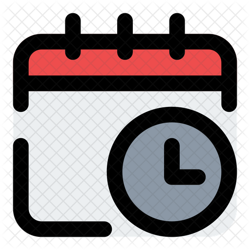

About the Workshop
The Workshop on Data Science in Astronomy is a three-day intensive program combining lectures and hands-on labs focused on modern, data-driven methods used across observational and theoretical astronomy. Participants will work with real survey data (TESS, Kepler, Gaia) and learn end-to-end workflows: data access, cleaning, visualization, time-series analysis, and reproducible Python-based analysis using libraries such as Astropy, Lightkurve, numpy, and scipy.
The workshop balances conceptual lectures from expert resource persons with practical sessions where you will apply techniques to actual datasets. Sessions will cover: data retrieval and formats, basic photometry and time-series tools, signal detection and classification, introduction to machine learning applied to astrophysical problems, and visualization best practices for publication-quality figures.
Who should attend: motivated UG (2nd & 3rd year) and PG students in Physics, Astronomy, Mathematics, Computer Science, or related fields.

Learning outcomes
- Access and pre-process astronomical time-series and catalog data from public archives.
- Perform basic photometric analysis and detect variability or transit-like signals.
- Apply simple classification and clustering techniques to astrophysical datasets.
- Produce reproducible Jupyter-based analyses and present results in short projects or posters.
Workshop Success Highlights (NWDSA 2026)
The National Workshop on Data Science in Astronomy was successfully conducted from February 24-26, 2026 at UPES, Dehradun. The event brought together students, faculty, and experts for lectures, coding-based hands-on sessions, project interactions, and poster discussions.
Key Outcomes
- Strong participation from UG, PG, and early-career researchers.
- Hands-on training with real astronomy datasets and Python tools.
- Active mentor-participant interactions during project and poster sessions.
- Improved research readiness in data-driven astronomy workflows.
Theme: Building practical data-science capability for modern astronomy research.


A rotating gallery of moments from the National Workshop on Data Science in Astronomy.
Eligibility
This workshop is aimed at students who want hands-on experience in applying data-science methods to astronomical problems. Applicants should meet at least one of the following:
- Undergraduate students (2nd or 3rd year) in Physics, Astronomy, Mathematics, Computer Science, or related disciplines.
- Postgraduate students in Physics, Astronomy, Data Science, or allied fields.
- Early-career researchers and engineering students with a strong interest in astronomical data analysis.
Recommended skills: basic familiarity with programming (Python/Jupyter), comfort with command-line tools, and a willingness to work with real datasets. Prior research experience is useful but not required.
Selection criteria: applications are evaluated on academic background, statement of interest, and available seats. Preference may be given to candidates who demonstrate motivation to pursue a short project or poster during the workshop.
Note: Seats are limited (~40). Participants must commit to attending all sessions to receive a certificate of participation.
Speakers / Resource Persons

Prof. H. P. Singh
Senior Professor (Retd.)
University of Delhi

Prof. Ajit Kembhavi
Emeritus Professor
IUCAA, Pune

Prof. Anupam Bhardwaj
Scientist
IUCAA, Pune

Dr. Kaushal Sharma
Scientific Officer
Forensic Science Laboratory, UP

Dr. Kuntal Mishra
Scientist
ARIES, Nanital

Prof. Bhuwan Joshi
Dy. Head
Udaipur Solar Observatory, Rajasthan (PRL, Ahmedabad)

Dr. Aasheesh Raturi
Assistant Prof.
PG Dolphin Institute, Dehradun

Dr. Meenu
Assistant Prof.
GLA, Mathura
Local Organizing Team

Dr. Nitesh Kumar
Assistant Professor
UPES, Dehradun

Dr. Prince Sharma
Assistant Professor
UPES, Dehradun

Dr. Prashant Rawat
Sr. Associate Professor
UPES, Dehradun

Dr. Balendra P. Singh
Assistant Professor
UPES, Dehradun

Dr. Arka Chatterjee
Assistant Professor
UPES, Dehradun
Registration
Selection will be based on academic background and a short statement of interest. There is no registration fee. Limited seats (~ 40) are available. Owing to limited funding, outstation participants will need to make their own arrangements for travel, accommodation, and meals outside the workshop.
Registration deadline has passed (January 10, 2026). Thank you for your interest!
Important Dates

Application Opens
December 1, 2025

Application Deadline
January 10, 2026

Notification of Selection
January 25, 2026

Last Date to Register (Shortlisted)
February 5, 2026

Workshop
February 24-26, 2026
List of Participants
Final list of participants can be accessed by downloading the PDF file below:
Download Final Participants List (PDF)Pre-Workshop Setup
To make the best use of the workshop, please prepare your computing environment before the event. While we will guide you through software during the opening session, having your system ready in advance ensures you can focus on learning without delays.
Data science and astronomy libraries: Install key packages used for data processing and astronomical analysis. The workshop will rely on a standard scientific Python stack; we recommend using an environment manager (e.g., Conda or pip) to organize your packages and avoid conflicts.
Datasets: We will provide the astronomical datasets (TESS, Kepler, Gaia) during lab sessions, either via download links or pre-loaded on workshop machines. You do not need to download these beforehand.
Before Day 1:
- Test that Python and Jupyter launch without errors on your laptop.
- Verify that your preferred packages import correctly and are up-to-date.
- Bring power adapters and any cables needed to connect to workshop displays or internet.
- Check your internet connectivity; we will provide WiFi, but it's good to have a mobile hotspot as backup.
Note: Participants are responsible for maintaining their own backups of code and notes. We recommend using version control (Git) or cloud storage to save your work during the workshop.
Program Schedule (Tentative)
Poster Presentation

Interested participants are invited to present posters on topics related to data-driven physics, astrophysics, astronomy, and allied areas. Posters may describe completed work, preliminary results, or well-motivated project ideas that use data-driven methods.
Submission: Please prepare a short abstract (maximum 200 words) and a poster (PDF). Submit the abstract and the poster PDF to upesworkshop2026@gmail.com before February 17, 2026. All participants are required to bring a printed copy of their poster with them on the day of the event. A poster template is attached for reference; however, participants may use an alternative design as long as it follows the general layout and formatting guidelines.
Download poster template:
Download Poster Template (PowerPoint)Format & guidelines:
- Poster file: PDF (recommended A0 portrait or A1 landscape).
- Include a clear title, authors and affiliations, short abstract, figures, and conclusions.
- Prepare a short 2-3 minute elevator pitch to present during the poster session.
Poster session: A dedicated poster session will be held during the workshop (Day 2). Authors will have time for short presentations and discussion with resource persons.
Judging & prizes: Posters will be evaluated by a panel of judges on scientific merit, clarity, originality, and presentation. The top three posters will receive prizes and a certificate of recognition.
For questions about poster submissions, contact the organizers at the emails above.
Contact
For queries, please reach out to the organizers.
- Dr. Nitesh Kumar (UPES) — nitesh.kumar@ddn.upes.ac.in · +91-8742930496
- Dr. Prince Sharma (UPES) — prince.sharma@ddn.upes.ac.in · +91-9654158687
- Dr. Anupam Bhardwaj (IUCAA) — anupam.bhardwaj@iucaa.in · +91-9811650632